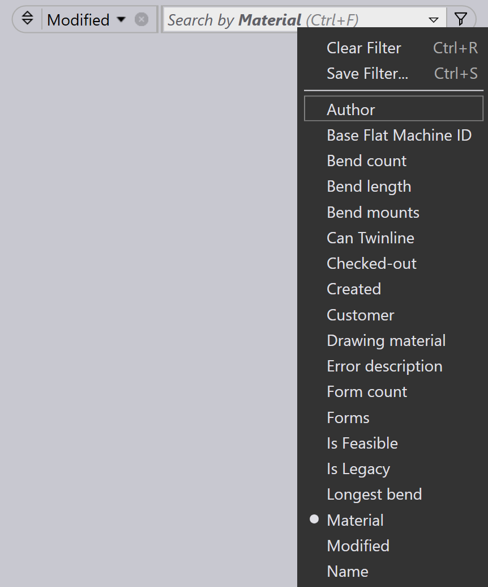

Saving filters
ฟิลเตอร์ที่บันทึกไว้ช่วยให้คุณสามารถนำเงื่อนไขที่ใช้บ่อยกลับมาใช้ซ้ำใน Parts, Jobs และ Layouts ได้ ทำให้เวิร์กโฟลว์ของคุณคล่องตัวขึ้น แต่ละโมดูลมาพร้อมกับ ฟิลเตอร์เริ่มต้น แต่สามารถสร้างรายการฟิลเตอร์เพิ่มเติมได้โดย Site Admins หรือ Programmers ตามต้องการ การนำฟิลเตอร์ที่บันทึกไว้กลับมาใช้ช่วยประหยัดเวลาและช่วยรักษา ความสม่ำเสมอในการค้นหา
-
คลิกที่ไอคอน
 เพื่อดูฟิลเตอร์เริ่มต้น
เพื่อดูฟิลเตอร์เริ่มต้น
ขั้นตอนการบันทึกฟิลเตอร์
-
คลิกที่ไอคอน เลือกรายการฟิลเตอร์ใดก็ได้

-
จากเมนูแบบเลื่อนลงของรายการฟิลเตอร์ที่เลือก ให้เลือกตัวเลือก เครื่องหมายถูก จะปรากฏถัดจากเงื่อนไขที่เลือก

-
เพื่อใช้เงื่อนไข ให้คลิกที่ไอคอน จากนั้นเลือก เพิ่มเงื่อนไข (Ctrl+PLUS)] คุณสามารถทำซ้ำ ขั้นตอนนี้เพื่อเพิ่มหลายเงื่อนไข

-
เพื่อบันทึกฟิลเตอร์ที่เลือกพร้อมเงื่อนไขเหล่านี้ ให้คลิก บันทึกตัวกรอง… (Ctrl+S)]

-
ป้อนชื่อจากนั้นคลิก _บันทึก

-
จากกล่องโต้ตอบ บันทึกตัวกรอง คุณยังสามารถลบ ฟิลเตอร์ที่บันทึกไว้ก่อนหน้านี้ได้
-
ฟิลเตอร์เหล่านี้จะถูกบันทึกในรายการฟิลเตอร์เริ่มต้น ที่นี่ วัสดุ ถูกบันทึกลงในรายการเริ่มต้น

| ฟิลเตอร์ที่สร้างโดย SiteAdmin และ Admin จะถูกแชร์ให้กับผู้ใช้ทั้งหมด ฟิลเตอร์ที่สร้างโดย Programmer และ Operator จะถูกแชร์เฉพาะกับบทบาทผู้ใช้ Programmers และ Operators เท่านั้น |
คำสั่งฟิลเตอร์
| Command | Icon | Shortcuts | Description |
|---|---|---|---|
Clear Selection |
|
Ctrl+X |
ยกเลิกการเลือกทั้งหมดและรีเฟรชมุมมองรายการฟิลเตอร์ |
Select Highlighted |
|
Ctrl+A |
เลือกตัวเลือกที่ไฮไลต์ทั้งหมด คำสั่งนี้จะยังคงปิดใช้งานหากการไฮไลต์รายการ ไม่สามารถใช้ได้กับฟิลด์ที่เลือก |
Match All |
|
& |
แสดงเฉพาะรายการที่ตรงกับเงื่อนไขที่เลือกทั้งหมด |
Pin In/Out Menu |
|
Ctrl+Down/Up |
เมื่อปักหมุด เมนูแบบเลื่อนลงจะยังคงเปิดอยู่แม้ว่าโฟกัสปัจจุบันจะย้ายไปยัง หน้าต่างอื่น |
Close Menu |
|
Esc |
ปิดเมนูแบบเลื่อนลง |